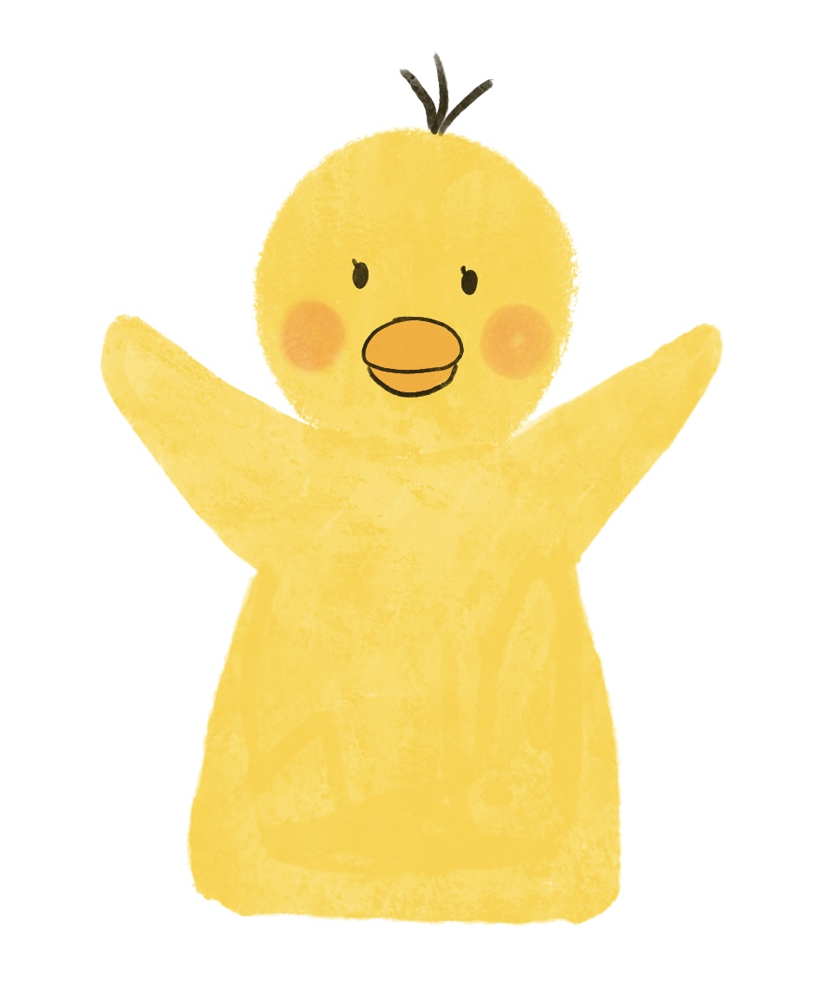

삐식이의 컴공 생존기 @bbi.sik_
삐식이라는 캐릭터로 저의 대학 생활을 담고 있습니다. 처음에는 인스타툰처럼 운영하려 했지만, 저의 부족한 그림 실력과 시간이 너무 오래 걸리는 관계로 일상 사진에 삐식이를 그려 넣는 방식으로도 운영하고 있습니다. 시작한 지 얼마 되지 않았지만, 종종 업로드하고 있습니다. DM으로 컴공 진학 관련, 수업 관련 질문도 들어와 친절하게 답변도 하곤 합니다. 위의 인스타 아이디를 클릭하면 삐식이 계정으로 이동됩니다.

위의 사진들은 인스타에 업로드한 사진들입니다. 그림체가 매번 달라지지만 코딩 병아리라는 컨셉으로 병아리 캐릭터로 유지하고 있습니다. 추후 계획은 저의 고군분투하던 1학년 생활을 차근차근 담아보려 합니다. 계정이 더 커진다면 컴공 진학 관련 Q&A나 독자들에게 도움이 될 만한 것들을 풀어나가고 싶습니다.
